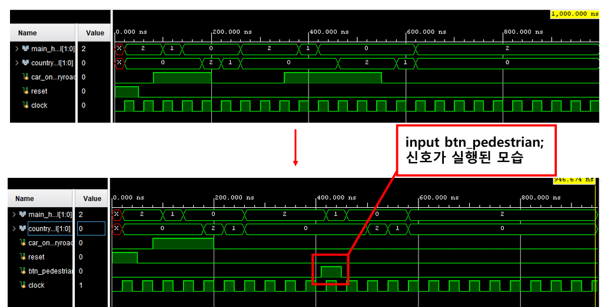
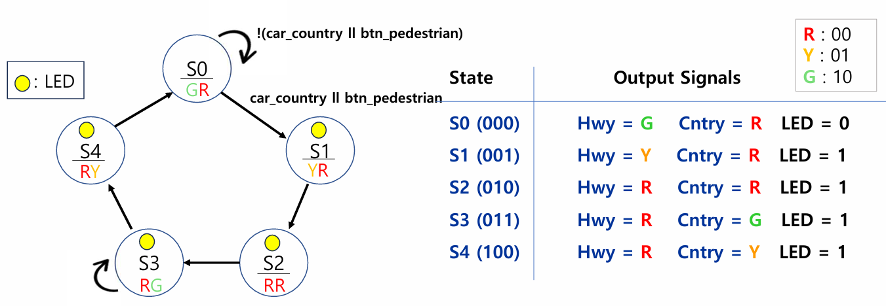
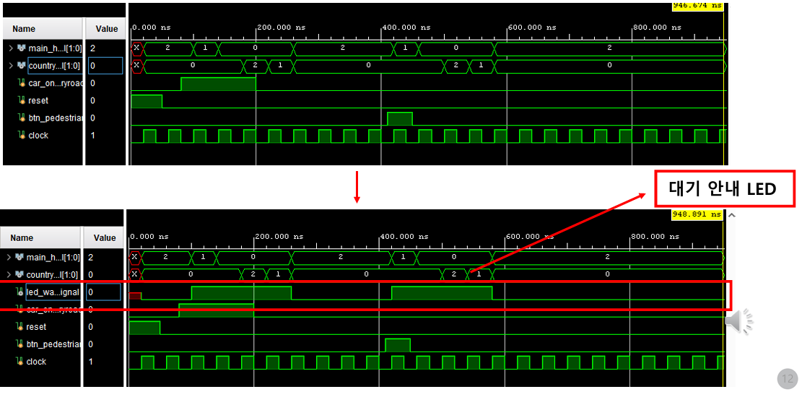

Pedestrian request
버튼 요청이 기존 전환 조건에 통합된 동작입니다.
Traffic Signal Controller Enhancement
기존 교통신호 제어 FSM에 보행자 요청 입력과 대기 LED 피드백을 추가하고, 상태를 늘리지 않은 채 기존 전환 시퀀스를 재사용한 설계 프로젝트입니다.

01 / OVERVIEW
기존 차량 감지 기반 FSM에 보행자 요청 기능을 추가하면서 상태 수와 기본 신호 순서는 유지하는 것이 설계 방향이었습니다. 보행자 버튼 요청은 차량 입력과 OR 조건으로 결합해 같은 신호 전환 시퀀스를 사용하도록 구성했습니다.
02 / METHOD
기존 상태와 차량 입력에 따른 전환 순서를 분석했습니다.
보행자 요청을 기존 차량 입력과 OR 조건으로 결합했습니다.
상태 추가 없이 동일 시퀀스가 실행되고 대기 LED가 동작하는지 검증했습니다.
03 / RESULTS
차량 입력과 보행자 요청이 동일한 신호 전환 시퀀스를 실행하며, 보행자 요청 후 대기 상태가 LED로 표시되는 동작을 시뮬레이션으로 확인했습니다.

버튼 요청이 기존 전환 조건에 통합된 동작입니다.

요청 접수 후 신호 전환 전까지의 대기 표시를 검증했습니다.
04 / FILES
README, 설계 자료, 시뮬레이션 이미지
VIEW GITHUB REPOSITORY ↗FSM 확장 설계와 시뮬레이션 결과 보고서
VIEW FINAL REPORT ↗프로젝트 설계와 검증 발표 자료
VIEW PRESENTATION PDF ↗